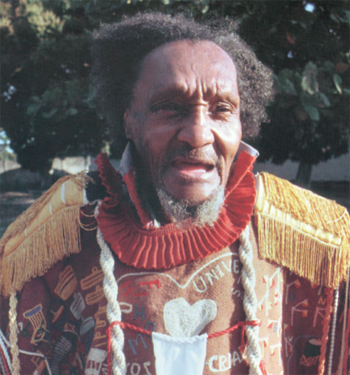
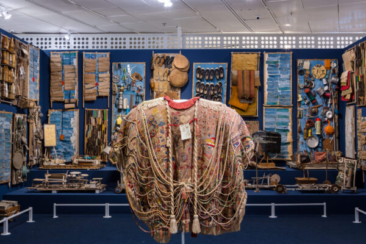
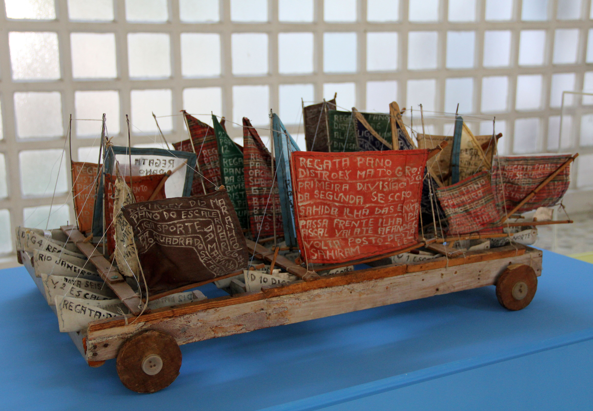

Arthur Bispo do Rosário foi artista visual. Em 1925, mudou-se para o Rio de Janeiro, onde trabalhou na Marinha Brasileira e na companhia de eletricidade Light. Em 1938, após um delírio místico, apresentou-se a um mosteiro, que o encaminhou ao Hospital dos Alienados, na Praia Vermelha.

Obras do acervo estão sendo catalogadas e digitalizadas para inserção na plataforma online do Governo do Estado, Midiateca Capixaba. O principal acervo físico encontra-se no Museu Bispo do Rosário Arte Contemporânea, no Rio de Janeiro.

Sua obra é considerada um marco da arte contemporânea brasileira e do movimento de Reforma Psiquiátrica. Bispo transformou materiais do cotidiano e sucatas em objetos de extrema carga poética e estética, rompendo as fronteiras entre a loucura e a criação artística.
Sua obra é considerada um marco da arte contemporânea brasileira e do movimento de Reforma Psiquiátrica. Bispo transformou materiais do cotidiano e sucatas em objetos de extrema carga poética e estética, rompendo as fronteiras entre a loucura e a criação artística.
